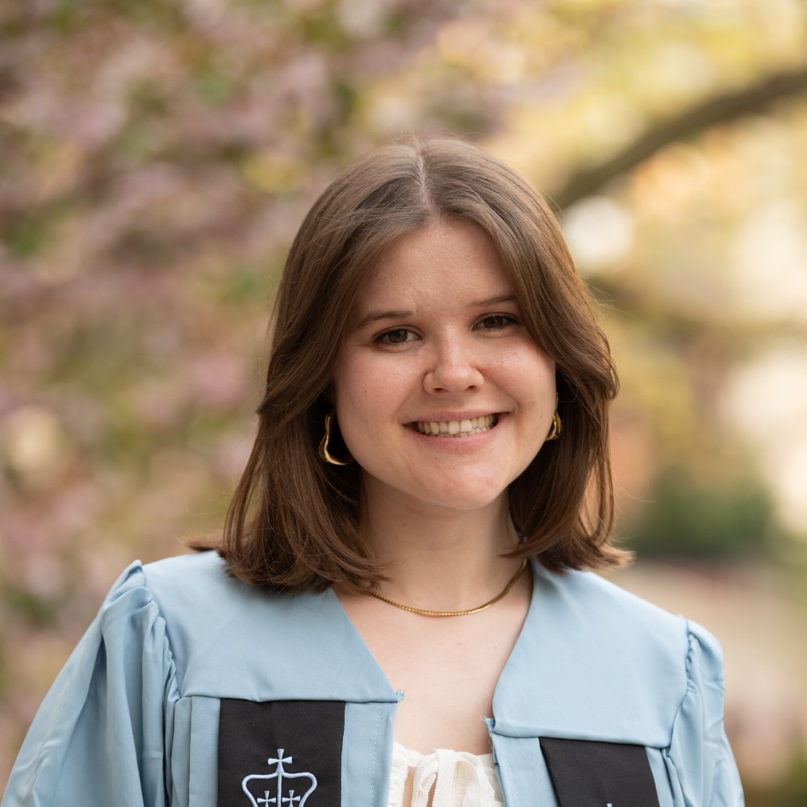

Erin Ahern (she/her)
Graduate Student · Bioengineering
In the lab: 2026–present
I'm interested in de novo multi-state proteins for programmable dynamics and therapeutic applications.
Education
- B.A., Biophysics, Columbia University
Publications
- Sun, X., Gayathri, S., Kumbier, K., Hammerlindl, H., Ahern, E., Wu, L. F. & Altschuler, S. J. ResMap: A community resource for systematic mapping of therapy-persistent residual cancer cell dependencies across contexts. Sci. Adv. 12, eaed7476 (2026).
- Wells, M. L., Lu, C., Sultanov, D., Weber, K. C., Ahern, E., Gong, Z., Chen, E. & Glasgow, A. Distinct energetic blueprints diversify function of conserved protein folds. Preprint at https://doi.org/10.1101/2025.04.02.646877 (2025).